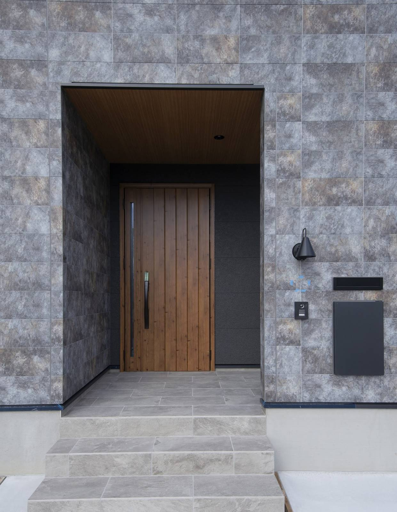
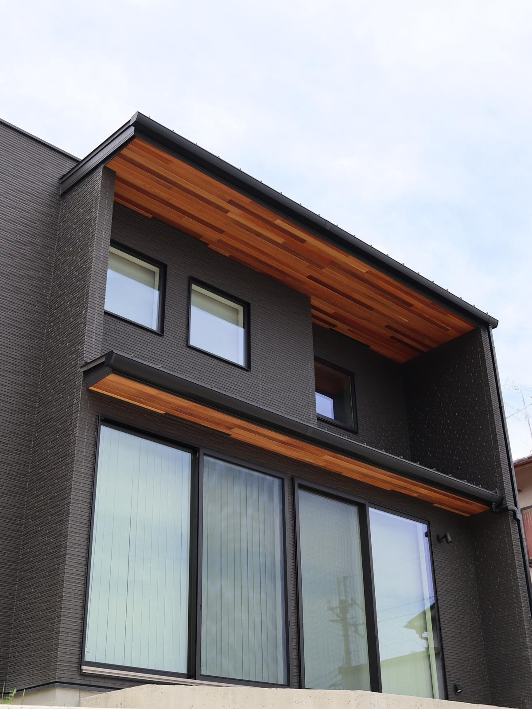

奈良で子育てをしながら暮らす土地を探すときは、校区が分かったら、候補地から学校へ歩く場面も考えてみてください。地図で近く見えても、信号待ちや坂道があると、毎日の通学で感じる負担は変わります。

近さより、横断する場所を見る
まず学校や自治体に通学路の確認先を聞きます。候補の道を歩くときは、交通量の多い道路をどこで渡るか、横断歩道の手前に待てる場所があるかを見ます。歩道が細くなる所では、傘を差した子ども同士がすれ違う場面も想像してみてください。

朝と夕方で歩きやすさを比べる
同じ道でも、車が増える朝と日が落ちる夕方では見え方が変わります。可能なら普段の登下校に近い時間帯に、歩道の見通しや街灯の位置を確かめます。休日しか行けない場合は、平日の交通量について確認できる相手に聞いておきましょう。
送迎が必要な日も考えておく
雨の日や習い事の帰りは、送迎が必要になることがあります。自宅前で安全に乗り降りできるか、車を出すときに歩行者を見通せるかまで確認しておくと、敷地に合わせた駐車位置を設計担当と相談できます。
関連記事 土地を探す前に校区を確認する
よくある質問
地図の最短ルートを歩けばよいですか？
通学路が最短経路と異なる場合があります。学校や自治体に確認できる範囲で、実際に歩く道を確かめてください。

この記事を書いた人：やすろー
株式会社シバ・サンホーム 専務／資金計画・土地探しの窓口
奈良の工務店シバサンホームで、
土地さがし・資金計画・打合せの窓口をしています。
モットーはスピード・誠実さ・楽しさ。